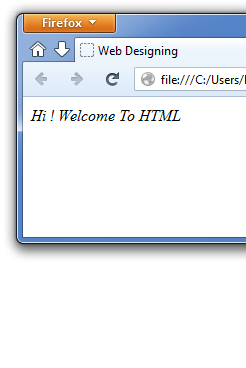
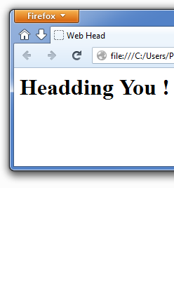
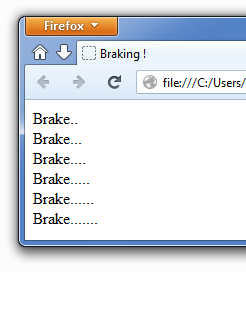
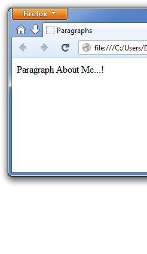
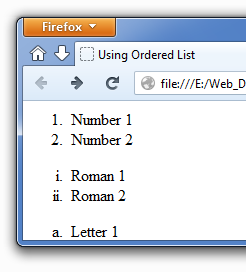

බහුමාධ්ය තාක්ෂණය සහිත වෙබ් අඩවි නිර්මාණය
බහුමාධ්ය තාක්ෂණය සහිත වෙබ් අඩවි නිර්මාණය
 HTML (Hyper Text Markup Language) යොදා ගනිමින් සරළ වෙබ් අඩවියක් නිර්මාණය කරගැනීම:
HTML (Hyper Text Markup Language) යොදා ගනිමින් සරළ වෙබ් අඩවියක් නිර්මාණය කරගැනීම:
| පළමු කොටස | දෙවන කොටස | තෙවන කොටස |
|---|
| ආරම්භය | මාතෘකා යෙදීම | Line Brakes යෙදීම | ඡේද සැකසීම | තිරස් රේඛා යෙදීම | අනුලක්ෂණ මොස්තර | අක්ෂර ප්රමාණයන් සැකසීම හා වර්ණ යෙදීම | ලැයිස්තු යෙදීම |
 HTML භාෂාව යෙදා ගනිමින් වෙබ් අඩවි නිර්මාණය කිරීම සඳහා Notpad (Start / All Programs / Accessories / Notepad) සංස්කරණය යෙදාගත හැකිය.
HTML යෙදා ගනිමින් වෙබ් අඩවි නිර්මාණයන් සඳහා අදාළ කේතයන් ලිවීමේ දී ඊට අදාළ සෑම ඛේතයක්ම < > සලකුණු අතර පිහිටුවිය යුතුය. සෑම විටම කේතයන් ලිවීමේ දී ආරම්භය සඳහා යෙදා ගනු ලබන අතර අවසානයේ කේතය යෙදා ගනීයි. මෙම උපදේශ කේතයන් සඳහා යොදා ගන්නා අක්ෂර සිම්පල් හෝ කැපිටල් හෝ යොදා ගත හැක.
නමැති කේතය අනිවාර්යයෙන්ම කේත දෙක අතර ලිවිය යුතුය. සෑම කේතයක්ම ආරම්භ කල ලෙසම / ලකුණ යොදා අවසාන කල යුතුය. වෙබ් පිටුවක අඩංගු තොරතුරු කේතය තුළ ලිවිය යුතුය.
මෙම වැඩසටහන වෙබ් පිටුවක් ලෙස වෙබ් බ්රව්සරය තුල දිස්වන හෙයින් මෙය දෘඩ තැටියේ තැම්පත් කිරීම සඳහා පහත පියවර අනුගමනය කල යුතුය. HTML භාෂාවෙහි වෙබ් අඩවිවලට අදාළ තොරතුරු, මාතෘකා හා උප මාතෘකා වශයෙන් වෙන් වෙන්ව දැක්වීම සඳහා අකුරු ප්රමාණ ආකාර 6ක් ඊට අදාළ කේතයන් ලියමින් නිර්මාණය කල හැක. ඒවා නම් සිට දක්වා කේතයන්ය. එම සියලුම කේතයන් වැසිය යුතු අතර සිට දක්වා යන විට අක්ෂර ක්රමයෙන් කුඩා මාතෘකා බවට පත්වේ. ප්රධාන මාතෘකා සඳහා යොදා ගන්නා අතර සිට දක්වා උප මාතෘකා සඳහා යෙදා ගනී. තවද මෙම මාතෘකා තද කලු අකුරෙන් (Blod) නිරූපිත වන අතර එම මාතෘකා පෙළ ගැස්වීම සඳහා උපදේශ කේත 3ක් ඇත.
 වෙබ් පිටුවක එක් පේලියකින් අලුත් පේලියකට යාම සඳහා (Line Brake) උප කේතය යෙදා ගනී. මෙහි දී පේලි අතර හිස් පේලියක් නොතබා ඊලඟ පේලියට ඉතිරි කොටස ගෙන ගොස් ලියනය කෙරෙයි. මෙය වැසීමට අවශ්ය නොවන කේතයකි. එහෙයින් එය 'Empty Tag' එකක් ලෙසද හඳුන්වයි.
නැවත පටුනට ඡේද වෙන් කිරීම හෝ පේලි දෙකක් අතර වැඩිපුර රූලක ඉඩක් තැබීම සඳහා කේතය යෙදා ගනී. ඡේද පෙල ගැස්වීම සඳහා ද මෙම කේතය භාවිතා කල හැක. එම ආකාර 4කි.
 වෙබ් පිටුවක බාහිර ස්වරූපය අලංකාර කරගැනීම සඳහා තිරස් රේඛා යොදා ගනීයි. (Horizontal Rules) මේ සඳහා යොදා ගනු ගබන උපදේශ කේතය
වනුයේ
කේතයයි. මෙම උපදේශ කේතය නිදහස් ටැගයක් වන අතර එය අවසාන කිරීමට අවශ්ය නොවේ. මෙම තිරස් රේඛාව මගින් වෙබ් පිටුවෙහි කොටස් වෙන් කර
දැක්වීමට ද හැකිය. මෙම තිරස් රේඛා තව දුරටත් පැහැදිලිව යොදා ගැනීම සඳහා අනු උපදේශ කේත 5ක් එක් කරගත හැක.
වෙබ් පිටුවක බාහිර ස්වරූපය අලංකාර කරගැනීම සඳහා තිරස් රේඛා යොදා ගනීයි. (Horizontal Rules) මේ සඳහා යොදා ගනු ගබන උපදේශ කේතය
වනුයේ
කේතයයි. මෙම උපදේශ කේතය නිදහස් ටැගයක් වන අතර එය අවසාන කිරීමට අවශ්ය නොවේ. මෙම තිරස් රේඛාව මගින් වෙබ් පිටුවෙහි කොටස් වෙන් කර
දැක්වීමට ද හැකිය. මෙම තිරස් රේඛා තව දුරටත් පැහැදිලිව යොදා ගැනීම සඳහා අනු උපදේශ කේත 5ක් එක් කරගත හැක.
රේඛාවේ දිග පික්සල් මගින් දැකිවීම: රේඛාවේ දිග පරිගණක තිරයේ වෙබ් පිටුව දිස්වන ප්රමාණයෙහි ප්රතිශකයක් ලෙස:
- Left
- Right
- Center
| White #FFFFFF |
| Lvory #FFFFFO |
| Silver #E6E8FA |
| Sky Blue #3299CC |
| Blue #OOOOFF |
| Purple #871F78 |
| Magenta #FFOOFF |
| Neon Pink #FF6EC7 |
| Red #FFOOOO |
| Yellow #FFFFOO |
| Green #OOFFOO |
| Orange #FF7FOO |
| Gold #CD7F32 |
| Cooper #B87333 |
| Black #OOOOOO |
ඉහත සඳහන් කරන ලද කේතයන් උපයෝගී කරගෙන රේඛා සඳහා වර්ණ යෙදීම සිදු කළ හැක.
| අකුරුවල ප්රමාණය විශාල කර දක්වයි. | |
| අකුරුවල ප්රමාණය කුඩා කර දක්වයි. | |
| Superscript ආකාරයට පෙන්වයි. | |
| Subscript ආකාරයට පෙන්වයි. | |
| අකුරු තරමක් ලොකුවට Italic කර දක්වයි. | පරිගණක වැඩසටහන්වල ඇති අක්ෂර දිස්වන ආකාරයට එකම ප්රමාණයකින් දක්වයි. | අකුරු Italic කර දක්වයි. | ටයිප්රයිටරයක දක්නට ලැබෙන ආකාරයට අක්ෂර දක්වයි. | අක්ෂර නිවි නිවී දැල්වෙන අයුරින් දිස්වෙයි. |
අකුරුවල ප්රමාණ දැක්වීම සඳහා අනු උපදේශ කේතය යෙදා ගනීයි. 1 සිට 7 දක්වා අකුරු ප්රමාණයන් මෙමගින් වෙනස් කළ හැක.
අකුරුවලට වර්ණ යෙදීමේ දී
සමග යෙදෙන අනු උපදේශ කේතය color වේ. (ඉහත සඳහන් අයුරින් පරිගණක භෂාවල දී colour යන්න u අක්ෂරය ඉවත්ව color ලෙස යෙදේ.)
වර්ණයක් දැක්වීමේ දී පෙර සඳහන් අයුරින් ෂඩ් දශමය ආකාරය යෙදා ගනු ලබයි.
(#FF7FOO යනු තැඹිලි වර්ණයයි.)
ඉහත සඳහන් අනු උපදේශ කේත දෙකම එක වර යෙදා ගත හැක.
නැවත පටුනට වෙබ් අඩවි සැකසීමේ දී තොරතුරු වාර්තා කිරීම සඳහා ලැයිස්තු සකස් කිරීමට සිදු වේ. මෙම ලැයිස්තු සකස් කිරීමේ දී ප්රධාන ආකාර තුනක් යොදා ගත හැක.
ඉහතින් සඳහන් වූ මාතෘකා යෙදීම, Line Brakes යෙදීම, ඡේද සැකසීම, තිරස් රේඛා යෙදීම, අනුලක්ෂණ මොස්තර යෙදීම, අක්ෂර ප්රමාණයන් සැකසීම හා වර්ණ යෙදීම, ලැයිස්තු යෙදීම ආදී ක්රමවේදයන් භාවිතයෙන් වෙබ් අඩවිය තුළ විවිධ අලංකාර වූ නිර්මාණ සිදු කිරීමට පුහුණු විය යුතුය. ඒවා ඉදිරියෙන් ඇති එක් එක් ටැගයන් සඳහාද (උදා: වගු නිර්මාණය, සම්බන්ධතා නිර්මාණය .... වැනි ටැග සඳහා ද) යෙදා ගත හැක.